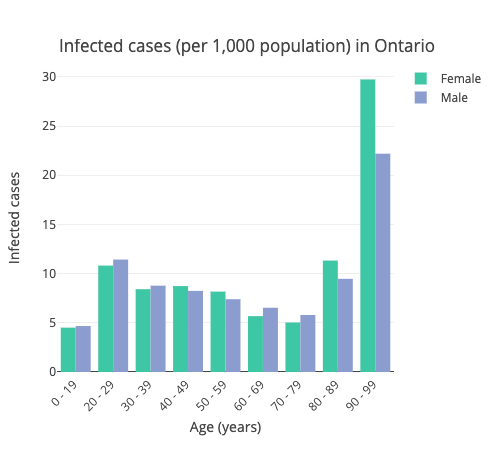

Western Research
| Computer Science and Stats Professor Dr. Grace Yi and her colleagues create a tool to help visualize COVID data across Canada. | Computer Science Professor Dr. Anwar Haque and a team of computer scientists do a digital deep dive in order to test the privacy thresholds and effectiveness of contract tracing mobile apps. | Epidemiologist Dr. Saverio Stranges investigates spread of the disease, trying to determine why some countries have been able to successfully manage the COVID outbreak but other countries have seen rapid increases in the number of cases. His results will be helpful in curbing the spread of future outbreaks. |
|  |
Computer Science lecturers Bryan Sarlo and Laura Reid feebly attempt to bring some lightness to a heavy world by having their students create a website about the pandemic but with a more hopeful tone. For more hopeful news about Western research contact us at hopefulcovidnews@uwo.ca
|